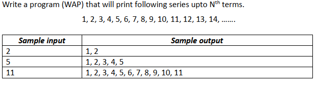
#include<stdio.h>
void main() {
int n;
scanf("%d", &n);
for (int i = 1; i<=n; i++) {
printf("%d, ", i);
}
}
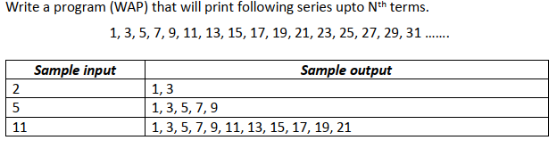
#include<stdio.h>
void main() {
int n, term;
scanf("%d", &n);
for (int i = 1; i<=n; i++) {
term = 2*(i-1)+1;
printf("%d, ", term);
}
}
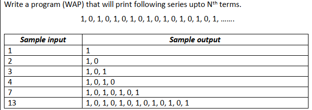
#include<stdio.h>
void main() {
int n;
scanf("%d", &n);
for(int i = 1; i<=n; i++) {
if(i%2 != 0)
printf("1, ");
else
printf("0, ");
}
}
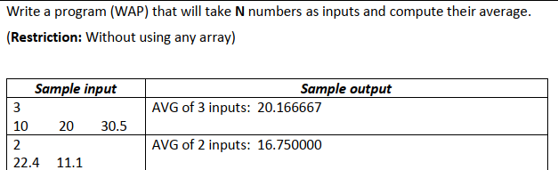
#include<stdio.h>
void main() {
float n, term, sum=0;
scanf("%f", &n);
for(int i = 1; i<=n; i++) {
scanf("%f", &term);
sum = sum + term;
}
printf("AVG of %.0f inputs: %f", n,(sum/n));
}
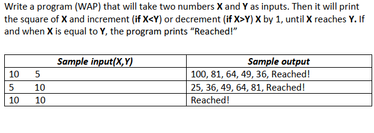
#include<stdio.h>
#include<math.h>
void main() {
int x, y;
scanf("%d %d", &x, &y);
int i = 1;
while (1) {
float sq = pow(x,2);
//int sq = x*x;
if(xy) {
printf("%f, ", sq);
x--;
}
else if(x==y) {
printf("Reached!");
break;
}
}
}
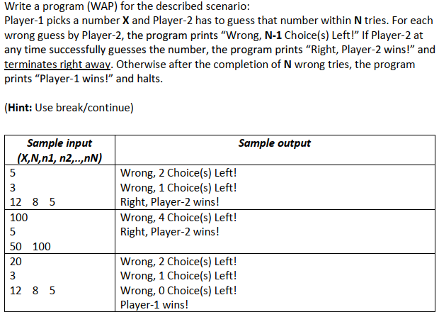
#include<stdio.h>
void main() {
int X, N, n;
scanf("%d %d", &X, &N); // X = player1, N = tries, n = player2
for (int i = 1; ; i++) {
scanf("%d", &n);
if(n != X) {
N--;
printf("Wrong, %d choices left!\n", N);
}
else if(n == X) {
printf("Right, Player-2 wins!\n");
break;
}
if(N == 0) {
printf("Player-1 wins!\n");
break;
}
}
}
#include<stdio.h>
void main() {
char ch;
int count=1;
for(int i = 1; ; i++) {
scanf(" %c", &ch);
if(ch == 'A')
break;
else {
printf("Input %d: %c\n", count, ch);
count++;
}
}
}
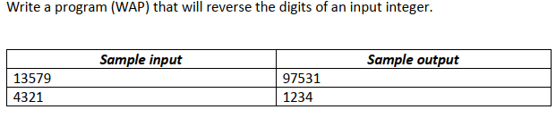
#include<stdio.h>
void main() {
int num, store;
scanf("%d", &num);
while(1) {
store = num % 10;
num = num / 10;
printf("%d", store);
if(num == 0)
break;
}
}
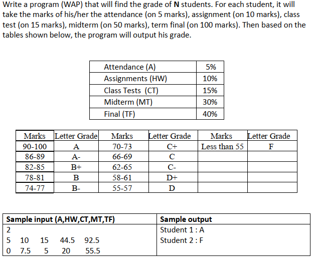
#include<stdio.h>
void main() {
float N;
scanf("%f", &N);
for (int i = 1; i <= N; i++) {
float A, HW, CT, MT, TF, mark;
scanf("%f %f %f %f %f", &A, &HW, &CT, &MT, &TF);
mark = A + HW + CT + (MT*0.6) + (TF*0.4); // MT = 50 (total mark)
// 50 * x = 30 (converting to 30);
// x = 0.6; multiply 'x' with the obtained mark to convert to 30;
if(mark>= 90 && mark<=100)
printf("Student %d: A\n", i);
else if(mark >= 86)
printf("Student %d: A-\n", i);
else if(mark >= 82)
printf("Student %d: B+\n", i);
else if(mark >= 78)
printf("Student %d: B\n", i);
else if(mark >= 74)
printf("Student %d: B-\n", i);
else if(mark >= 70)
printf("Student %d: C+\n", i);
else if(mark >= 66)
printf("Student %d: C\n", i);
else if(mark >= 62)
printf("Student %d: C-\n", i);
else if(mark >= 58)
printf("Student %d: D+\n", i);
else if(mark >= 55)
printf("Student %d: D\n", i);
else if(mark < 55)
printf("Student %d: F\n", i);
}
}
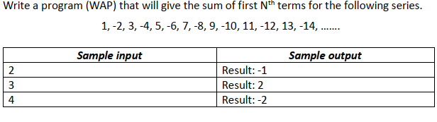
#include<stdio.h>
void main() {
int term,number, sum=0;
scanf("%d", &term);
for (int i=1; i<=term ;i++) {
if(i%2 != 0)
number = i;
else
number = -i;
sum = sum + number;
}
printf("Result: %d", sum);
}
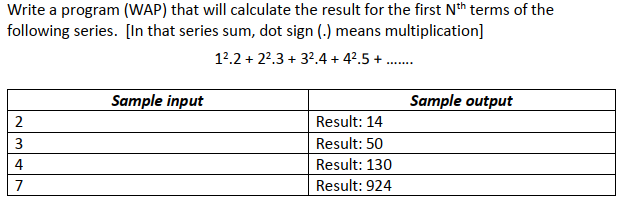
#include<stdio.h>
#include<math.h>
void main() {
int term, sum=0, series;
scanf("%d", &term);
for (int i = 1; i <= term; i++) {
series = pow(i,2)*(i+1);
sum = sum + series;
}
printf("Result: %d", sum);
}
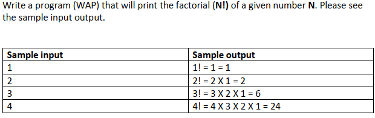
#include<stdio.h>
void main() {
int n;
scanf("%d", &n);
int a = 1; // 1st term
int b = 3; // 2nd term
for (int i = 1; i <= n; i++)
{
printf("%d, ", a);
int result = a+b; // 3rd term
a = b;
b = result;
}
}
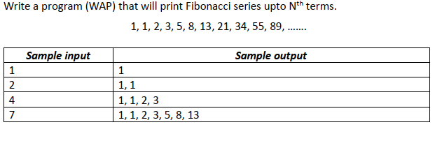
#include<stdio.h>
void main() {
int n, fact = 1;
scanf("%d", &n);
printf("%d! = ", n);
for (int i = n; ; i--) {
fact = fact * i;
printf("%d ", i);
if(i==1)
break;
printf("X ");
}
printf("= %d", fact);
}
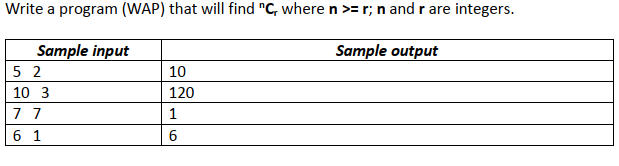
#include<stdio.h>
void main() {
int n, r, fact1=1, fact2=1, fact3=1;
scanf("%d %d", &n, &r);
if(n>=r) {
for (int i = 1; i <= n; i++) {
fact1 = fact1*i;
}
for (int i = 1; i <= r; i++) {
fact2 = fact2*i;
}
for (int i = 1; i <= (n-r); i++) {
fact3 = fact3*i;
}
printf("%d", fact1/(fact2 * fact3));
}
}
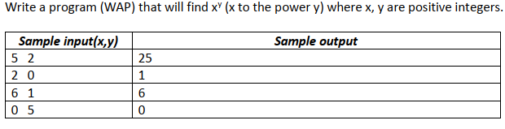
#include<stdio.h>
#include<math.h>
void main() {
float x,y;
scanf("%f %f", &x, &y);
float result = pow(x,y);
printf("%0.0f", result);
}
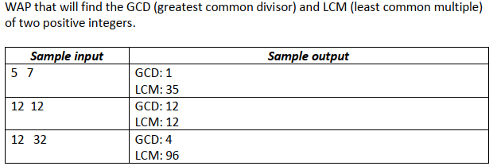
#include<stdio.h>
void main() {
int num1, num2, GCD, LCM;
scanf("%d %d", &num1, &num2);
int max = (num1 > num2) ? num1 : num2;
for (int i = max; ; i++) {
if ((i%num1 == 0) && (i%num2 ==0)) {
LCM = i;
break;
}
}
GCD = (num1 * num2) / LCM;
printf("GCD: %d\n", GCD);
printf("LCM: %d\n", LCM);
}
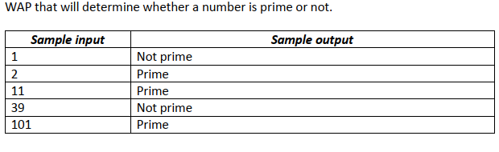
#include <stdio.h>
void main() {
int n, flag = 1; // 1 -> true, 0 -> false, flag = 1 (prime)
printf("n: ");
scanf("%d", &n);
// 0 and 1 are not prime numbers
// change flag to 0 for non-prime number
if (n == 0 || n == 1)
flag = 0;
for (int i = 2; i < n ; i++)
{
// if n is divisible by i, then n is not prime
// change flag to 0 for non-prime number
if (n % i == 0) {
flag = 0;
break;
}
}
// flag is 1 for prime numbers
if (flag == 1)
printf("Prime");
else
printf("Not prime");
}
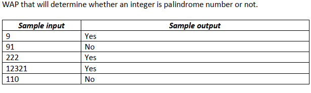
#include <stdio.h>
void main() {
int num, org_num, last_num, reversed_num = 0;
scanf("%d", #);
org_num = num;
while (num != 0) { // Reverse the number
last_num = num % 10;
reversed_num = reversed_num * 10 + last_num;
num /= 10;
}
if (org_num == reversed_num) {
printf("Yes");
} else {
printf("No");
}
}
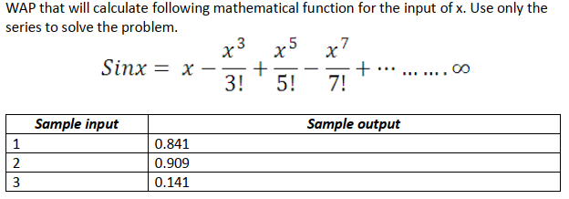
#include <stdio.h>
int main() {
double result = 0;
int sign = 1;
double x;
scanf("%lf", &x);
for (int i = 1; i <= 20; i += 2) {
double term = 1;
long long fact = 1;
for (int j = 1; j <= i; j++) {
term *= x; // Calculate x raised to the power of i
}
for (int j = 1; j <= i; j++) {
fact *= j; // Calculate factorial of i
}
result += sign * (term / fact);
sign = -sign; // Change the sign for the next term
}
printf("%.3lf\n", result);
return 0;
}
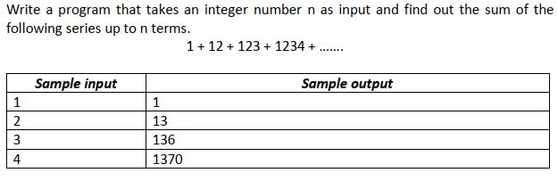
#include <stdio.h>
void main() {
int n;
int num = 0;
int sum = 0;
scanf("%d", &n);
for (int i = 1; i <= n; i++) {
num = num * 10 + i;
sum += num;
}
printf("%d\n",sum);
}